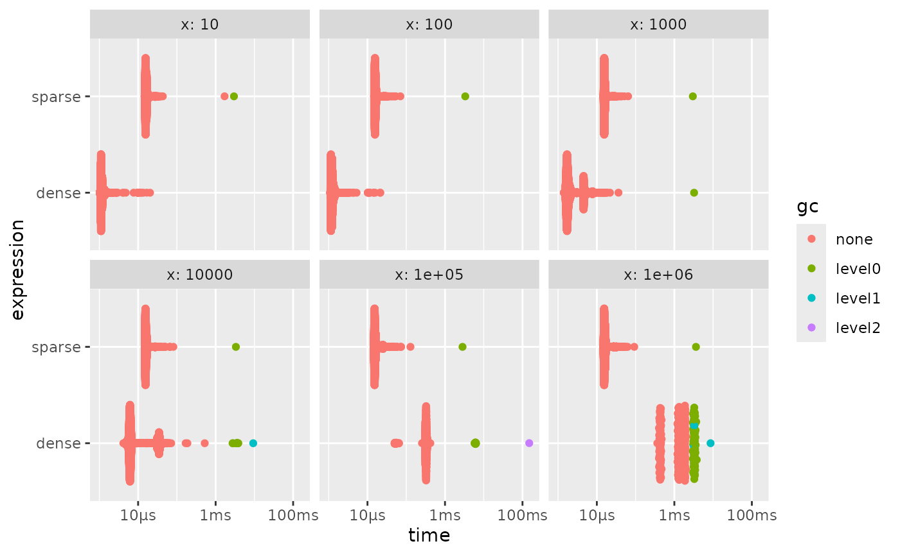
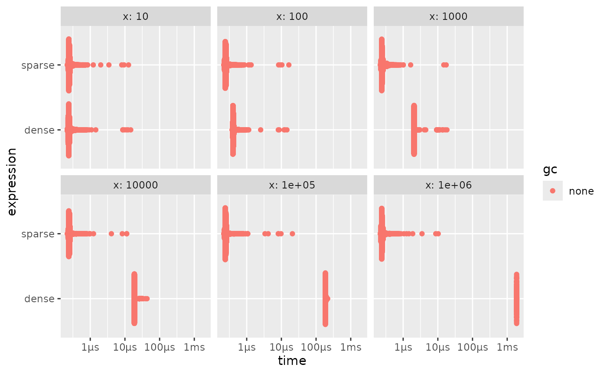
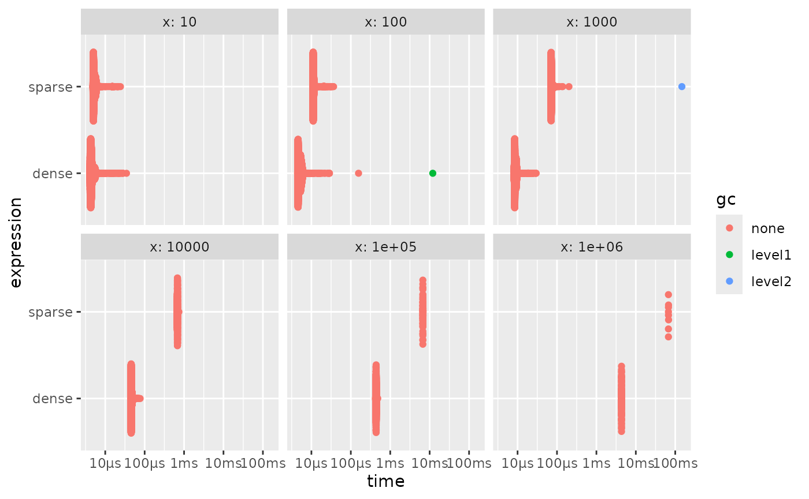
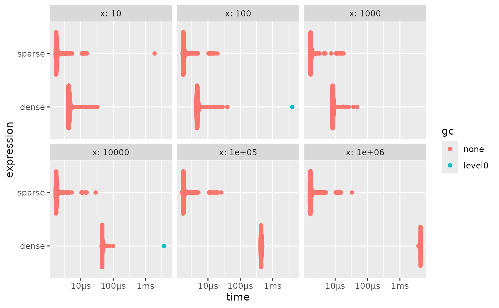

The sparse vectors created with this package will act as a drop-in replacement for dense vectors in any workflow. You will not see a memory penalty for doing this. This is happening because non-compatible operations will simply materialize the full vector and it would behave as if you didn’t create it sparse to begin with.
This is generally the truth, but there are some cases where it isn’t. This article will lay out when and how you can use sparse vectors for the best performance possible.
To aid users in determining whether the code is not dropping the
sparsity, the option sparsevctrs.verbose_materialize can be
set to alert the user that a sparse vector was forced to
materialize.
options("sparsevctrs.verbose_materialize" = TRUE)Base size of objects
One of the differences between sparse and dense vectors is how much memory they take up. This value is computed as an offset plus a linear effect based on the number of values.
An integer vector of length 0 takes up 48 B to exist.
Each additional value adds another 4 B on average. This
effect is linear, so an integer vector with 1000 elements takes up
48 B + 1000 * 4 B = 4048 B, an integer vector with 2000
elements takes up 48 B + 2000 * 4 B = 8048 B and so on.
The vectors above only contained the value 0. We can
replicate that sparsely with
sparse_integer(integer(), integer(), length = 0). We see
that the size of a 0-length sparse integer vector has a size of
1304 B = 1.3 kB.
obj_size(sparse_integer(integer(), integer(), length = 0))
#> 1.30 kBThis value is the same for any size of sparse vector, regardless of how long it is. This is happening because the sparse vectors only keep track of the non-default values.
obj_size(sparse_integer(integer(), integer(), length = 0))
#> 1.30 kB
obj_size(sparse_integer(integer(), integer(), length = 1000))
#> 1.30 kB
obj_size(sparse_integer(integer(), integer(), length = 2000))
#> 1.30 kB
obj_size(sparse_integer(integer(), integer(), length = 3000))
#> 1.30 kBKeeping dense data in a sparse format
A dense integer vector will have the same size, regardless of what values it takes
dense_x[1:100] <- 1:100
obj_size(dense_x)
#> 4.05 kBThe sparse integer counterpart on the other hand will increase for each non-default we need to store.
sparse_x <- sparse_integer(integer(), integer(), 1000)
obj_size(sparse_x)
#> 1.30 kB
sparse_x <- sparse_integer(1:100, 1:100, 1000)
obj_size(sparse_x)
#> 2.49 kB
sparse_x <- sparse_integer(1:200, 1:200, 1000)
obj_size(sparse_x)
#> 2.89 kBSo it all comes down to a trade-off. Dense integer vectors with a size of 313 or less will be smaller than their sparse counterparts no matter what. Dense integer vector vectors with 314 elements will take up the same amount of memory as their sparse counterpart with no values.
From these values we can calculate memory equivalent vectors to
determine which would be more efficient, noting that sparse vectors
increase in size by twice for each non-default value that their dense
counterpart. For a vector of length 1000, the sparse vector will be
equivalent in size if it has 343 non-default values. And
these values continue to go up.
Conversion speed
As with everything in life, we have to deal with tradeoffs. The main tradeoff you will see in using this package is that memory allocation is minimized to allow for workflows not otherwise possible. With that in mind, there will be times when using these sparse vectors is not ideal. The main one is that converting back and forth between dense and sparse vectors takes a non-zero amount of time. Generally, you won’t see any benefit if you are forced to materialize a sparse vector.
Below is one such example. both dense_fun() and
sparse_fun() creates a numeric vector, with length
x, with the value of x in the last element.
Calling [] on an ALTREP vector forces it to materialize, so
we now can look at how much slower it is to create the sparse vector and
go back.
dense_fun <- function(x) {
res <- numeric(x)
res[x] <- x
res
}
sparse_fun <- function(x) {
res <- sparse_double(x, x, x)
res[]
}
bench::press(
x = c(100, 1000, 10000, 100000, 1000000, 10000000),
{
bench::mark(
dense = dense_fun(x),
sparse = sparse_fun(x)
)
}
) |>
autoplot()
staying dense the whole time is faster no matter the speed.
As a comparison, we can look at how much time it takes if we don’t force materialization.
dense_fun <- function(x) {
res <- numeric(x)
res[x] <- x
res
}
sparse_fun <- function(x) {
res <- sparse_double(x, x, x)
res
}
bench::press(
x = c(100, 1000, 10000, 100000, 1000000, 10000000),
{
bench::mark(
dense = dense_fun(x),
sparse = sparse_fun(x)
)
}
) |>
autoplot()
What we are really seeing here is that creating a sparse vector takes
a near-constant amount of time. So once the length is high enough it
wins. But this by itself isn’t a good comparison because these vectors
are useless unless we do something with them. Where sparse vectors shine
is when we can use sparse-aware methods. One such example are
min(), max() and sum() for
numeric ALTREP vectors. These functions have special hooks to trigger
implementations that don’t require materialization. They will thus do
quite well.
dense_fun <- function(x) {
res <- numeric(x)
res[x] <- x
res
}
sparse_fun <- function(x) {
res <- sparse_double(x, x, x)
res
}
bench::press(
x = c(100, 1000, 10000, 100000, 1000000, 10000000),
{
dense_x <- dense_fun(x)
sparse_x <- sparse_fun(x)
bench::mark(
dense = sum(dense_x),
sparse = sum(sparse_x)
)
}
) |>
autoplot()
These functions do well because they calculate the sum over the
non-default values instead of all values. For truly sparse vectors this
will be fast. On the other hand, some methods don’t have ALTREP support.
Trying to use them triggers materialization to allow the calculations to
progress. Once such unsupported method is mean().
dense_fun <- function(x) {
res <- numeric(x)
res[x] <- x
res
}
sparse_fun <- function(x) {
res <- sparse_double(x, x, x)
res
}
bench::press(
x = c(100, 1000, 10000, 100000, 1000000, 10000000),
{
dense_x <- dense_fun(x)
sparse_x <- sparse_fun(x)
bench::mark(
dense = mean(dense_x),
sparse = mean(sparse_x)
)
}
) |>
autoplot()
And we see that the sparse is always slower. But this can be handled
by doing sparse-aware calculations. The helper functions
sparse_positions() and sparse_values() can be
used in combination with other functions to work with sparse vectors
without having to materialize them. Under the assumption that
default = 0, we can write a mean method for sparse vectors
as sum(sparse_values(x)) / length(x). Using this
formulation allows us to work fast again by avoiding
materialization.
dense_fun <- function(x) {
res <- numeric(x)
res[x] <- x
res
}
sparse_fun <- function(x) {
res <- sparse_double(x, x, x)
res
}
sparse_mean <- function(x) {
sum(sparse_values(x)) / length(x)
}
bench::press(
x = c(100, 1000, 10000, 100000, 1000000, 10000000),
{
dense_x <- dense_fun(x)
sparse_x <- sparse_fun(x)
bench::mark(
dense = mean(dense_x),
sparse = sparse_mean(sparse_x)
)
}
) |>
autoplot()
The ideal usage of sparse vectors is to keep them in a data.frame or
tibble, and use coerce_to_sparse_matrix() at the end to
create a sparse matrix that is understood by downstream functions.